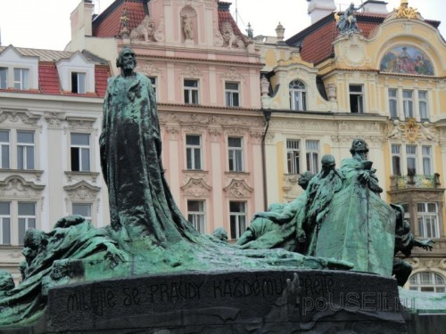

Ян Гус
Из школьного курса истории,наверняка, все помнят понятие Гусисткие войны, где фигурировало имя Яна Гуса— известного героя-идеолога Реформации. Ян Гус родился в 1369 году в городе Гусинец, Южная Чехия. Нужно сказать, что не зря ему присвоили такие почетные звания, как национальный герой, мыслитель, идеолог Реформации, потому как Гус был очень умён. В 1396 году он закончил Пражский университет со степенью магистра искусств, после чего продолжил работу, читая лекции. Спустя четыре года, в 1400 году,Ян Гус приняв священство и стал деканом факультета философии. Паралельно началась и проповедческая деятельность, которая повлияла на дальнейшие события.
Так, в 1401 году он начал читать проповеди в костеле Святого Михаила, а уже через год он занял должность настоятеля и проведника в частной Вифлеемской часовне в Старом городе Праги, где он читал проповеди, на которые собиралось до 3000 человек. Реформатор в своих речах затрагивал не только проблемы повседневной жизни, но и настойчиво критиковал бюргеров, феодалов и клир. Несмотря на то, что в его речи можно было услышать негативный отзыв о церкви, Гус относил себя к церковнику, который не только вскрывал недостатки людей, но и служил на благо церкви.
Интересно, что когда произошел раскол в римско-католической церкви, Гус, под влиянием трудов английского реформатора Джона Виклифа, сохранял нейтралитет, поэтому в своих проповедях высказывал мнение, координально отличавшееся от официальной политики Католической церкви.
Если заглянуть в Википедию и посмотреть что проповедовал Гус, то можно увидеть следующие его мнения:
- Нельзя взимать плату за таинства и продавать церковные должности. Священнику достаточно взимать небольшую плату с богачей, чтобы удовлетворить свои первейшие жизненные потребности.
- Нельзя слепо подчиняться церкви, но нужно думать самим, применяя слова из Священного Писания: «Если слепой поведёт слепого, оба упадут в яму».
- Власть, нарушающая заповеди Бога, не может быть Им признана.
- Собственность должна принадлежать справедливым. Несправедливый богач есть вор.
- Каждый христианин должен искать правду, даже рискуя благополучием, спокойствием и жизнью.
Он считал справедливыми свои суждения, поэтому старался донести их до каждого. Таким образом, по его приказу стены Вифлеемской часовни были расписаны рисунками, где можно было увидеть наглядное подтверждение его учениям; Гус сочинил несколько песен, которые сразу же стали известными в народе, а после провел реформу чешского правописания, которая способствовала пониманию книг среди простонародья.
Имя Яна Гуса широко известно и в мире филологии. Именно он стал автором труда «Чешская орфография», где он смог сделать невозможное — каждый звук передать отдельное буквой, разработав диакритические знаки.
После проведения дискуссии об учениях Виклифа, где участвавали его сторонники — архиепископ Праги, пригласивший Гуса выступить, и, другие лица, было оказано сильное влияние духовенства, что заставило главу католической церки отказаться от поддержки Гуса.
В этот же промежуток времени были арестованы и обвинены в ереси друзья — сторонники реформатора — Станислав из Знойма и Стефан Палеч, которые в дальнейшем отказались от прежних убеждений.
В 1409 году папа Римский издал буллу — средневековый папский документ со свинцовой печатью, в котором был отдан приказ архиепископу предпринять карательные действия против Яна Гуса. Таким образом, все проповеди Гуса были под запретом, все книги, намекавшие на реформу были собраны и сожжены. Несмотря на решение папы, власти были на стороне национального героя чешского народа, что поспособствовало росту его влияния среди горожан. Осенью 1409 года были запрещены проповеди в частных церквях, в том числе и в Вифлеемской часовне. Ян гус отказался выполнять приказ и подал апелляцию к Христу.
В 1411 году Яна Гуса обвинил в ереси архиепископ Збинек, что в последствии бросило тень на университет и короля Вацлава IV, поддерживавшего реформатора. Такое обвинение оскорбило короля и он издал указ, конфисковать все владения представителей церкви, которые придерживались мнения Збинека. Архиепископу пришлось бежать в Венгрию, где он скончался в пути 28 октября 1411 года.
В 1412 году началась продажа индульгенций антипапой Ионанном XXIII с целью организации похода против другого антипапы Александра V. После того, как Ян Гус высказал свое мнение, которое было против индульгенций и против права иерархов сражаться , антипапа Иоанн наложил на Гуса интердикт- запрет на все церковные действия и требы. Чтобы интердикт не распространился на всю Прагу, Ян Гус переехал в Южную Чехию, в город Краковец, где дворянство не подчинялось решениям папы. Собственно, в Краковце, Ян Гус и продолжил открытую критику как церковной так и светской власти.
В 1414 году в городе Констанце проходил XVI вселенский собор, который преследовал одну цель прекратить Папский раскол. На него был вызван Ян Гус, который был под личной охраной императора австрийского Сигизмунда. После прибытия Гуса в город, выяснилось, что император вместо нужной грамоты вручил ему самую обычную подорожную грамоту. Емупредъявили обвинение в ереси и организации изгнания немцев из Пражского университета, после ченр арестовали и заключили в одной из комнат дворца, где проходил Констанцский собор.
Некоторые сторонники Гуса пытались напомнить Сигизмунду о данном обещании защитить Гуса, но он отказался от своих слов и не вмешался в ход событий. На допросах он долгое время не давал никаких показаний, пока ему не зачитали смертный приговор, который могли привести в исполнение в любое время, если тот не станет защищаться. После побега Иоанна XXIII в связи с требованием собора отречься от престола, Гус был передан под содержание констансткого архиепископа, посадившего Яна на хлеб с водой.
8 мая 1415 года Сигизмунду была отправлена петиция от моравской шляхты, в которой было изложено требование освободить Яна Гуса и дать ему высказаться на соборе. 12 мая этого же года такой же протест был высказан сеймом Чехии и Моравии , а затем чешским и польским дврянством, находившимся в Констанце.
Сигизмунду не оставалось ничего, кроме как организовать слушание дела Яна Гуса на соборе, которое длилось с 5-8 июня. По окончанию слушания, Гусу был вынесен смертный приговор, который мог быть отклонен, если бы Гус отрекся от своих убеждений. Стоит лишь прочесть одну фразу Яна Гуса, чтобы понять, почему он не отрекался от своих убеждений, которая гласит так: «Противоречит моей совести отрекаться от фраз, которых никогда не произносил.»
По окончанию суда, реформатор снова апеллировал к Христу.
После того, как Гус отправил окончательное письменное послание собору об отказе отрекаться от убеждений 1 июля 1415 года, через 5 дней смертный приговор был приведен в действие — Ян Гус был сожжен на костре.
Говорят, что перед смертью, когда старушка, подложила хворосту в костер, Ян воскликнул: «О, святая простота!». Так же легенда гласит и о пророчестве, которое предсказывало появление великого реформатора, чьи труды будут услышаны (Мартина Лютера). Перед смертью он сказал «-Я-то — Гусь, а за мной придет Лебедь!»
После казни Гуса, таким же образом был казнен один из его сподвижников Иероним Пражский.
Казнь реформатора стала одним из поводов Гуситских войн, которые не принесли в конечном счете стране Реформации.
В Чехии Яна Гуса чтят, как борца за национальную самобытность против немцев. Здесь установлены памятники, музеи и улицы, где фигурирует его имя.
К примеру, в 1915 году, к 500-летней годовщине казни, на Староместкой площади Праги был установлен Памятник Яну Гусу. Кроме того, в 1918 году была основана Чехословацкая гуситская церковь,поддерживающая экуменические отношения с Католической церковью, на сегодняшний день имеющая около 100 000 сторонников.
О нем напоминает обширное литературное наследие, вклад в развитие чешского языка и орфографию.
Каждый год, 6 июля в городах Чехии и Словакии зажигают костры, чтобы почтить память национального героя.